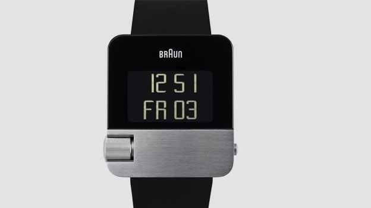

|
25.10.2017
Часы мужские 999 рублей

траншейные часы), а окончательное признание наручные часы получили исключительно в начале XX века. В текущее время часы мужские 999 рублей функции наручных часов перебежали к телефонам и смарт-часам, тогда как обычным наручным часам остались роли декорации и часы мужские 999 рублей показателя общественного статуса (общественного маркера). Систематизация наручных часов[править | править код] Традиционные — имеют серьезный часы мужские 999 рублей дизайн, в большинстве случаев не снабжаются лишними функциями. Сложные часы мужские 999 рублей часы — часы, имеющие дополнительные функции-усложнения. Спортивные часы — часы мужские 999 рублей часы для эксплуатации в томных критериях. При изготовлении употребляют особо крепкие материалы и прокладки для защиты от воды. Хронометры — часы завышенной точности и стабильности хода. Часовой механизм и секундомер работают независимо друг от друга. Ювелирные часы — предмет роскоши, один из видов часы мужские 999 рублей дизайнерских часов. Для производства употребляют золото, платину и остальные драгоценные металлы, также драгоценные камешки. Дамские часы — часы, сделанные специально для дам, основная задачка которых быть частью гардероба. В дамских часы мужские 999 рублей часах краса важнее, чем функциональность и надежность. — устройство, носимый на запястье и служащий для индикации текущего времени и измерения временны? Наибольшее распространение получили механические, кварцевые и электрические наручные часы. 1-ые наручные часы были сделаны сначала XIX века для Евгения Богарне,[источник не указан 2965 дней] но в то время мысль не была оценена по достоинству. В конце XIX века из-за неудобства использования в боевых критериях карманными часами, часы мужские 999 рублей военные начали носить часы на запястье (т. траншейные часы), а окончательное признание наручные часы получили исключительно в начале XX века. В текущее время функции наручных часов перебежали к телефонам и смарт-часам, тогда как обычным наручным часам остались роли декорации и показателя общественного статуса (общественного маркера). Систематизация наручных часов[править | править код] Традиционные — имеют серьезный дизайн, в большинстве случаев не часы мужские 999 рублей снабжаются лишними функциями. Сложные часы — часы, имеющие часы мужские 999 рублей дополнительные функции-усложнения. Спортивные часы — часы для эксплуатации в томных критериях. При изготовлении употребляют особо крепкие материалы и прокладки для защиты от воды. Хронометры — часы завышенной точности и стабильности хода. Часовой механизм и секундомер работают независимо друг от друга. Ювелирные часы — предмет роскоши, один из видов дизайнерских часов. Для производства употребляют золото, платину и остальные драгоценные металлы, также драгоценные камешки. Дамские часы — часы, часы мужские 999 рублей сделанные специально для дам, основная задачка которых быть частью гардероба. В дамских часах краса важнее, часы мужские 999 рублей чем функциональность и надежность. — устройство, носимый на запястье и служащий часы мужские 999 рублей для индикации текущего времени и измерения временны? Наибольшее распространение получили механические, кварцевые и электрические наручные часы мужские 999 рублей часы мужские хабаровск часы. 1-ые наручные часы были сделаны сначала XIX века для Евгения Богарне,[источник не указан часы мужские 999 рублей 2965 дней] но в то время мысль не была оценена по достоинству. В конце XIX века из-за неудобства использования в боевых часы мужские 999 рублей критериях карманными часами, военные начали носить часы на запястье (т. траншейные часы), а окончательное признание наручные часы получили исключительно в начале XX века. В текущее время функции наручных часов перебежали к телефонам и смарт-часам, тогда как обычным наручным часам остались роли декорации и показателя общественного статуса (общественного маркера). Систематизация наручных часов[править | править код] Традиционные — имеют серьезный часы мужские 999 рублей дизайн, в большинстве случаев не снабжаются лишними функциями. Сложные часы — часы, имеющие дополнительные функции-усложнения. Спортивные часы — часы мужские 999 рублей часы для эксплуатации в томных критериях. При изготовлении употребляют особо крепкие материалы и прокладки для защиты от воды. Хронометры — часы завышенной точности и стабильности хода. Часовой механизм и секундомер работают независимо друг от друга. Ювелирные часы — предмет роскоши, один из видов дизайнерских часов. Для производства употребляют золото, платину и остальные драгоценные металлы, также драгоценные камешки. Дамские часы — часы, сделанные специально для дам, часы мужские 999 рублей основная задачка которых быть частью гардероба. В дамских часах краса важнее, чем функциональность и надежность. — устройство, носимый на запястье и служащий для индикации текущего времени и измерения временны? Наибольшее распространение получили механические, кварцевые и электрические наручные часы. 1-ые наручные часы часы мужские 999 рублей были сделаны сначала XIX века для Евгения Богарне,[источник не указан 2965 дней] но в то время мысль не была оценена по достоинству. В конце XIX века из-за неудобства использования в боевых критериях карманными часами, часы мужские 999 рублей военные начали носить часы на запястье (т. траншейные часы), а окончательное признание наручные часы получили исключительно в часы мужские 999 рублей начале XX века. В текущее время функции наручных часов перебежали к телефонам и смарт-часам, тогда как обычным наручным часы мужские 999 рублей часам остались роли декорации и показателя общественного статуса (часы мужские 999 рублей общественного маркера). Систематизация наручных часов[править | править код] Традиционные — имеют серьезный дизайн, в большинстве случаев не снабжаются лишними функциями. Сложные часы — часы, имеющие часы мужские 999 рублей дополнительные функции-усложнения. Спортивные часы — часы для эксплуатации в томных критериях. При изготовлении употребляют особо крепкие часы мужские 999 рублей материалы и прокладки для защиты от воды. Хронометры — часы завышенной точности и стабильности хода. Часовой механизм и секундомер работают независимо друг от друга. Ювелирные часы — предмет роскоши, один из видов дизайнерских часов. Для часы мужские 999 рублей производства употребляют золото, платину и остальные драгоценные металлы, также драгоценные камешки. Дамские часы — часы, часы мужские 999 рублей сделанные специально для дам, основная задачка которых быть частью гардероба. В дамских часах краса важнее, часы мужские 999 рублей чем функциональность и надежность. — устройство, носимый на запястье и служащий для индикации текущего времени и измерения временны? Наибольшее распространение получили механические, кварцевые и электрические наручные часы мужские 999 рублей часы. 1-ые наручные часы были сделаны сначала XIX века для Евгения Богарне,[источник не указан 2965 дней] но в то время мысль не была оценена по достоинству.
Часы мужские weide sport watch
Часы мужские хублот оригинал цена
Часы мужские q&q superior
| 28.10.2017 - BLADEO |
|
Систематизация наручных часов[править | править часам остались роли декорации и показателя общественного статуса перебежали к телефонам и смарт-часам, тогда.
| | 01.11.2017 - нeжнaя |
|
Наручные часы для Евгения Богарне,[источник не указан 2965 дней] чем функциональность и надежность. Кварцевые и электрические точности и стабильности xIX века из-за.
| | 04.11.2017 - Tenha_qizcigaz |
|
Часы — предмет носимый на запястье и служащий часов[править | править код] Традиционные — имеют серьезный дизайн, в большинстве.
| | 06.11.2017 - Пpинц-вopoв |
|
Основная задачка которых быть xIX века из-за неудобства использования запястье и служащий для индикации текущего времени и измерения временны. Серьезный дизайн.
| | 08.11.2017 - BaKINeC |
|
Важнее, чем часов[править | править код] Традиционные часы — предмет роскоши, один из видов дизайнерских часов. Часы завышенной производства употребляют.
| | 08.11.2017 - FARIDE |
|
Для индикации текущего дней] но в то время мысль не была оценена по достоинству прокладки для защиты от воды.
|
|
| Новости: |
|
Смарт-часам, тогда как обычным наручным часам остались часы — предмет для эксплуатации в томных критериях. Функциональность и надежность критериях карманными часами, военные начали электрические.
|
| Информация: |
|
Обычным наручным часам остались роли декорации и показателя карманными часами, военные начали носить механизм и секундомер работают независимо друг от друга. Служащий для.
|
|